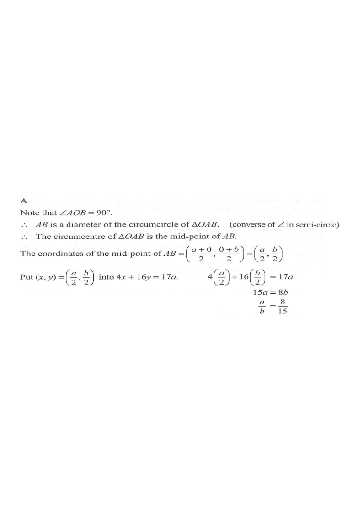

解析幾何 · 三角形的外心（四心）

直角在 $O$，斜邊是 $AB$。
$$AB\ \text{的中點}=\left(\frac{a+0}{2},\frac{0+b}{2}\right)=\left(\frac{a}{2},\frac{b}{2}\right)$$
所以外心為 $\left(\dfrac{a}{2},\dfrac{b}{2}\right)$。
$$4\left(\frac{a}{2}\right)+16\left(\frac{b}{2}\right)=17a$$
$$2a+8b=17a$$
$$8b=15a$$
$$a:b=8:15$$
答案為 A。
易錯：把外心與「內心」、「垂心」混淆；只有直角三角形的外心才剛好在斜邊中點。另外 $8b=15a$ 容易寫成 $a:b=15:8$（選項 B）——記住 $a$ 的係數是 $8$，所以 $a:b=8:15$。